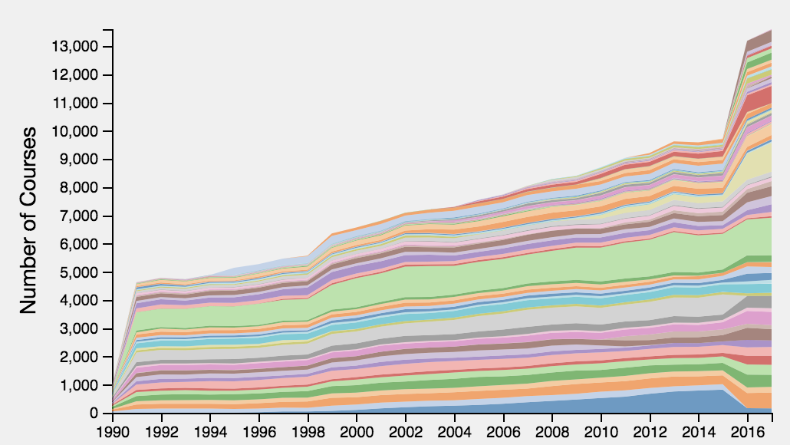
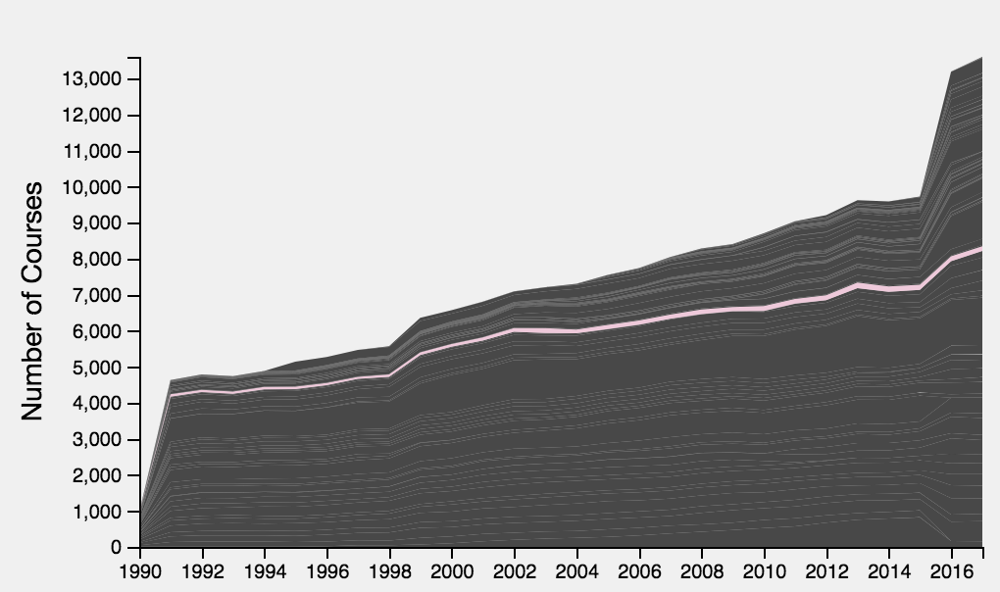
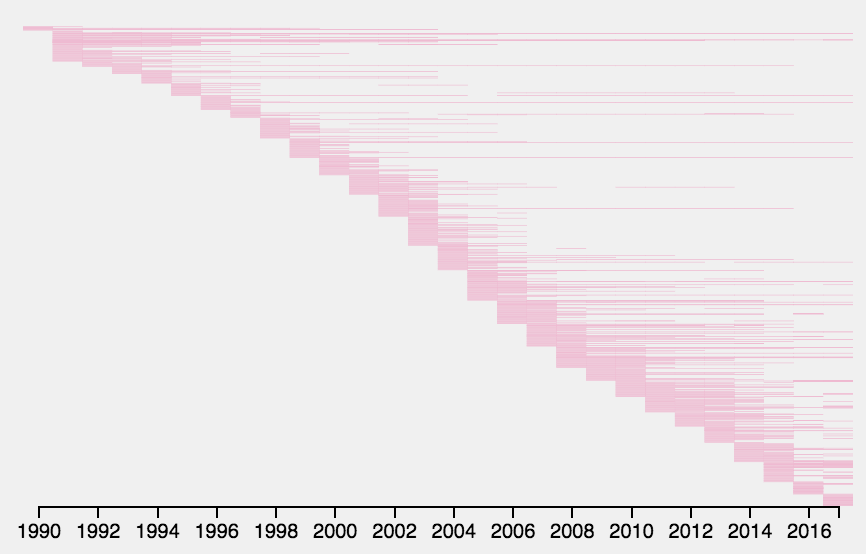
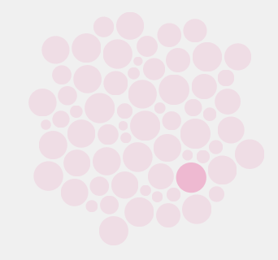

The Knowledge Producing Machine
Mapping Harvard's Curricular History
This website was designed with the express intent of giving interested parties a deeper look at the curricular history of this storied institution.
The Data
Courses
Instructors
Subjects
Terms
Departments
Between 1930-2017
Wrangling the Data
(click the pulsating circles)
Wrangling the Data - Part Two
(click the pulsating circles)
Dashboard Exploration

Stacked Area Chart
The first visualization you will be presented with on the full dashboard is a stacked area chart including all the departments within FAS from 1990 to 2017.
Each colored line represents a department. Hovering over a line will display the department title at the top of the dashboard.
The x-axis is years, and the y-axis represents either total number of courses or a relative proportion of courses for each year. There is a button labeled 'Relative/Absolute' to change the display.

Refined Stacked Area Chart
Clicking a department's time-line will highlight it by changing all the other departments to gray. This stacked area chart is displaying the "Visual and Environmental Studies" department.
Clicking the time-line again will redisplay all the departments in their respective colors.
Clicking a department's line will also render a new Gantt chart to the left of the stacked area chart.
There is a slider to narrow your focus to specific years between 1990 and 2017.
Continued Dashboard Exploration

Gantt Chart
Each Gantt chart is unique and shows the department's growth and change over time.
The Gantt chart to the left represents the "Visual and Environmental Studies" department from 1990 to 2017.
By hovering over a rectangle you can display the course title.
Clicking a particular course will render a bubble chart of enrollment data for that course in that particular year.

Bubble Chart
The bubble chart is a representation of a particular year within a department.
Each bubble's size represents the relative enrollment for that course during that year.
The highlighted bubble in this chart represents "Classic and World Silent Cinema" in 1991.
The highlighted bubble is the course last clicked; if more than one bubble is highlighted, the course was offered more than once that year.
Now you are ready to move on to the full dashboard and explore the Harvard FAS curricular history from 1990 to 2017.
NOTE: Due to arrangements between the metaLAB and the Harvard Registrar's Office, the enrollment data for each course was artificially generated for use in this project.
The Authors
Data Disclaimer: The data utilized to produce this site's visualizations is
sensitive and proprietary. The enrollment data was artificially generated.
to Harvard University.
For more information regarding the data please contact one of the authors.